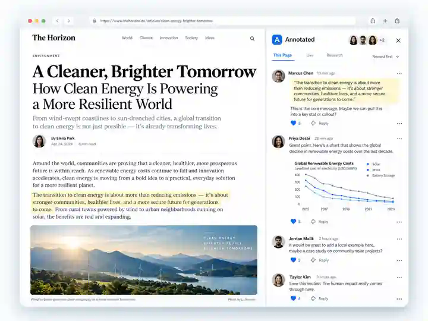

Highlight text
Capture key passages, add your own thinking, and keep the original context attached.
Capture what matters. Discuss it where you found it. Preserve the source.
Follow what changes. Turn the web into research you can actually use.

Annotated stays connected to the source, the conversation, and the exact version you captured.
Capture key passages, add your own thinking, and keep the original context attached.
Save exactly what you are seeing, including a selected region of the page.
Capture media directly from the page with focused clips up to 90 seconds.
Your annotation stays tied to what the page looked like—even when the live source changes.